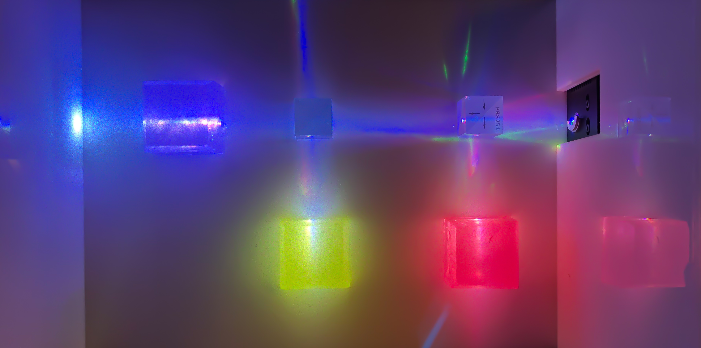
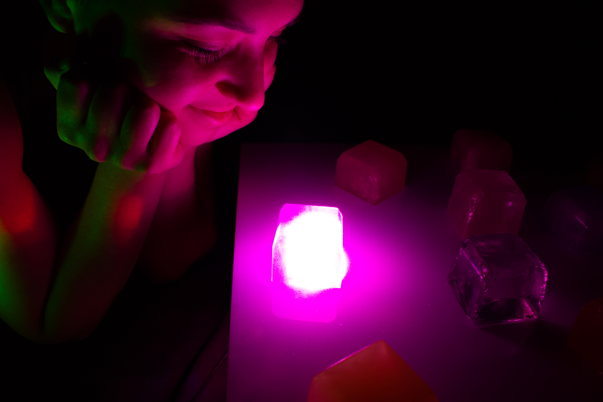
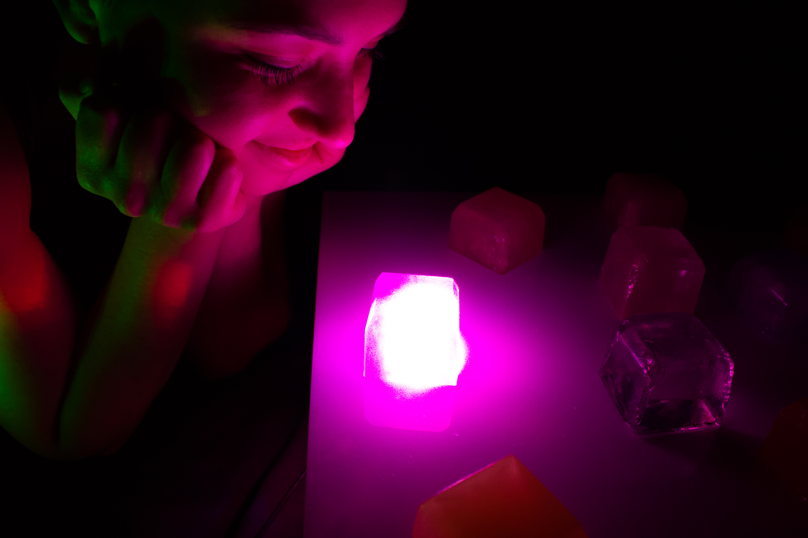

This pedagogy of experiments seeks to accurately model and manufacture a new form of lighting fixtures and a new model to understand and customize them.
These new fixtures are made of polyester resin and a particle distribution called a colloid. Unlike traditional light bulb models, rather than having illumination come from individual lighting fixtures that are wired to a common electric source, we are using one lighting source in the form of a laser to illuminate each fixture.
By using controlled resin casting alongside numerical simulation of structured colloids, we can program and evaluate different substances held in distribution with a 9 dimensionality lighting model. This allows us to understand the type of lighting output that can be achieved with various materials and shapes, as well as predict the aesthetic properties that these lighting sources may allow us. From various colors to different glittery reflects, this framework allows both technical and artistic framework.
MotivationArchitects have thought about lighting int he same mode for centuries. We power lighting fixtures around a space to illuminate it, using different light bulbs and diffusers for different color temperatures and perceived brightness.
This framework, while very accurate and understood not only by architects but by interior designers, home owners, and lighting companies, is not efficient. It is linear in gain — as your room gains more square footage, you need more fixtures. Thus you use more materials and more energy.

 
